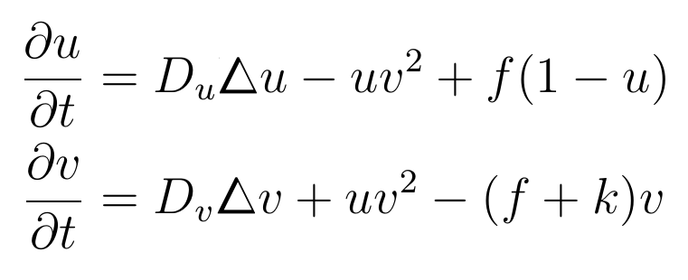

The Gray-Scott reaction-diffusion pattern generating model

Kick amount
dt
Du
Dv
f:
k:
Adaptive moving mesh
Show grid
Source code repository is available at
https://github.com/quantitativebiker/gswebgl